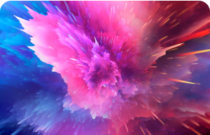
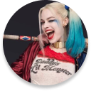

Bruce Wayne es el único personaje que se identifica como Batman y
aparece en Batman, Detective Comics, Batman y Robin, y Batman: The
Dark Knight. Dick Grayson vuelve al manto de Nightwing


Harley Quinn
La creación de Harley Quinn fue una idea de último minuto
propuesta por el escritor estadounidense Paul Dini para modificar
una escena del vigésimo-segundo episodio de Batman: la serie
animada
BATMAN
Bruce Wayne es el único personaje que se identifica como Batman y
aparece en Batman, Detective Comics, Batman y Robin, y Batman: The
Dark Knight. Dick Grayson vuelve al manto de Nightwing